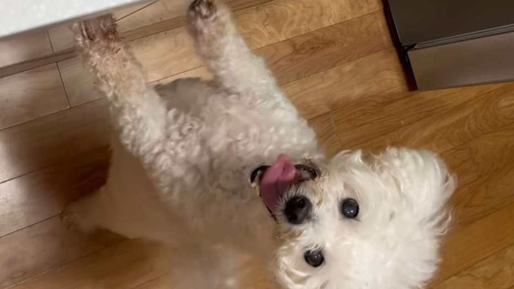
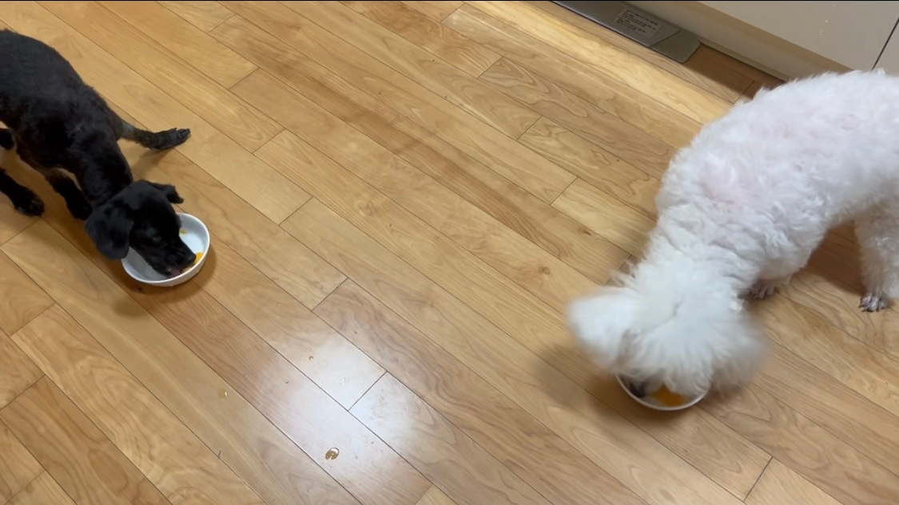
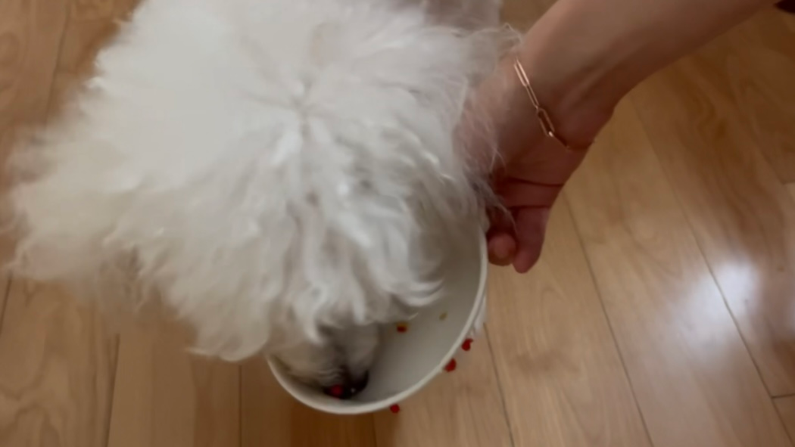

몽자매 일상
700 subscribers
-
먹는게 너무 좋은 강아지 몽자 | 구강암 투병중에도 잘 먹어줘서 너무 기특하고 예쁘네 (강아지 엄마생활중) 몽자매 일상 77 views
-
냠냠 언니가 해주는 건강식이 너무 좋은 몽침이 몽자 | 몽자 건강위한 특식덕에 호강하는 몽침이 (강아지 엄마생활중) 몽자매 일상 77 views
-
몽자야 맛있니?? 그릇 구멍나겠어 | 종양때문에 흘리면서도 잘 먹는 몽자 (강아지 엄마생활중) 몽자매 일상 77 views